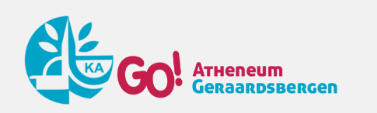

Social Technical Sciences, 2012 – 2017.
Bachelor Social Readaptation Sciences, 2017 – 2020.

Master Social Work, Social Policy, 2020 – 2022.
I'm currently working as Project Consultant for Unique Career. I started as Project Consultant in November 2022 and my first project was at Laborelec. Now I'm waiting for a new Project. Meanwhile i'm learning new skills on VDAB. Such as, for exemple human recources - Recruitment, Selection and Onboarding.
I've created this online resume and my portfolio in the context of a training of Dr. Angela Yu on Udemy namely The Complete 2023 Web Development Bootcamp . I'm eager to learn new thing and this course on Udemy show my motivation and determination to improve myself.
I like to plan, organize and search things through. Beside that i like being responsible of a team and help people to learn and improve themself one to one. I'm creative but also conventional.
I have always been very satisfied with Oline's work at Dreamland. She started with us at a young age as a student worker. Over the years I have seen her grow into an independent and enterprising young lady. Oline works quickly, but at the same time also qualitatively. She learned the different functions at a fast pace. She is a quiet type, but knows how to stand her ground and has a sense of initiative. Collaboration with colleagues always went smoothly. She's liked within our team!
I let Oline go with pain in my heart. I would love to keep her as a member of my team. She will be missed at Dreamland!
--
Warehouse manager at Dreamland
« Oline mainly works in Sharedoc (a Sharepoint system adapted to Laborelec). This involves processing reports that have to go through an approval process. She also manages our vendor registration mailbox. This concerns the supply of data for finance-related questions. In terms of content, you notice that the match is not really there for Oline - she also communicated about this transparently, yet professionally. Fortunately, this has never had an impact on the quality of her work. Oline is a punctual person who can remain calm under many circumstances. She is a friendly colleague and is very conscientious. She quickly became familiar with our department, even though the sector was completely foreign to her before she started here. This shows her analytical skills. The fact that she knows how to communicate fluently in trilingual also ensured a smooth integration. Towards next projects I see her flourishing in a service-oriented environment, you can also give her tasks that require a lot of planning with great confidence. I think she would be very happy to join a dynamic team.”
Contracting & Admin Team Coordinator